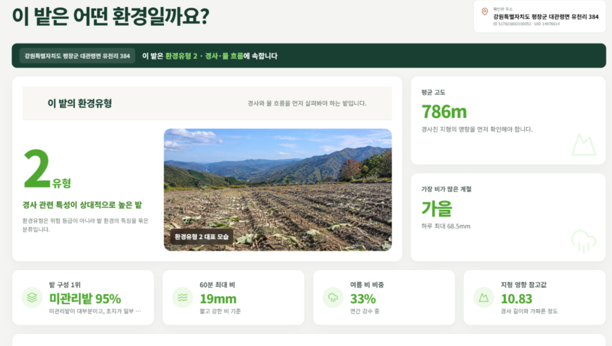
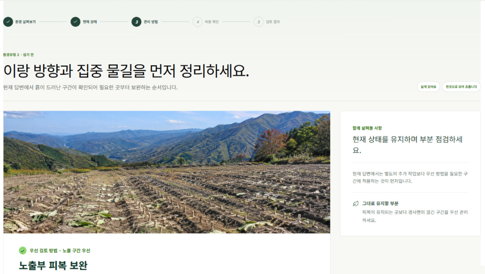
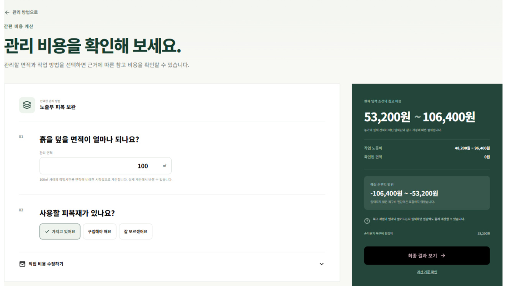

기대효과
그렇다면 ‘밭봄’을 통해 농부는 어떤 도움을 받을 수 있을까?
‘밭봄’이 농부에게 주는
세 가지 도움
사진 1

첫째
흩어져 있던 환경정보를
한곳에서 확인
할 수 있어
내 밭을 이해하는 부담을 줄입니다
환경정보를 한곳에서
사진 2

둘째
현장 조건에 맞는 대책만 검토하도록 안내해
불필요한 자재나 시설 비용
을 줄입니다
맞는 대책만 검토
사진 3

셋째
예상 순편익과 손익분기점
을 확인해
대책을 적용했을 때 비용을 회수할 수 있는지
판단할 수 있습니다
비용 회수 여부 판단
모든 농지에 새로운 대책을 더하는 것이 정답은 아닙니다
기존 관리가 충분하면 유지하고, 보완이 필요한 곳에만 비용과 노력을 집중합니다